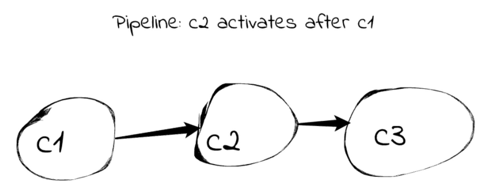
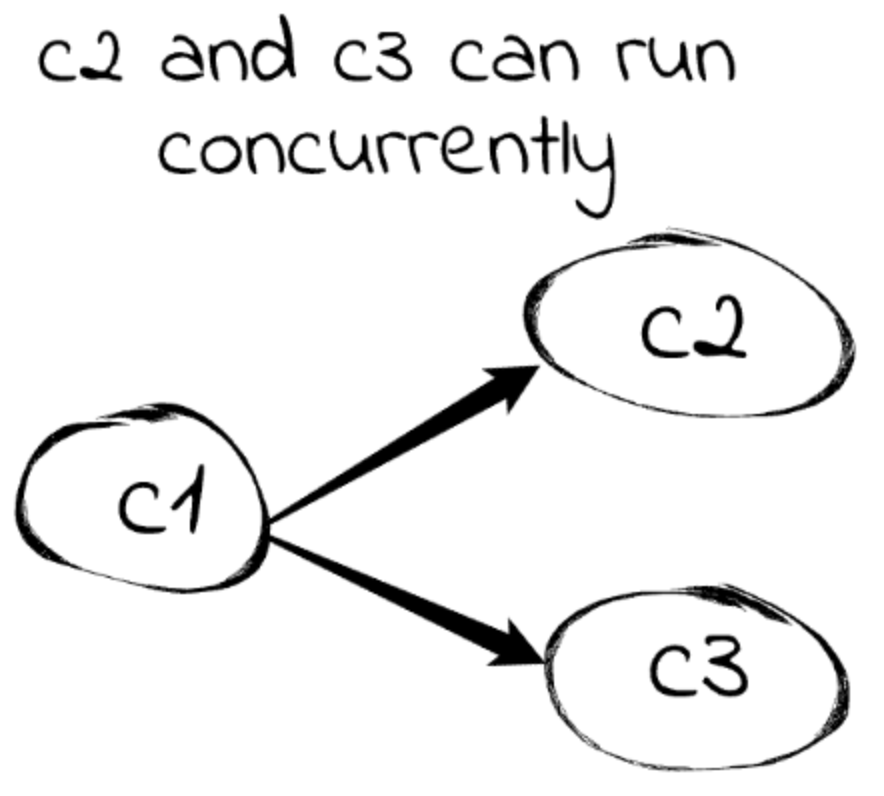
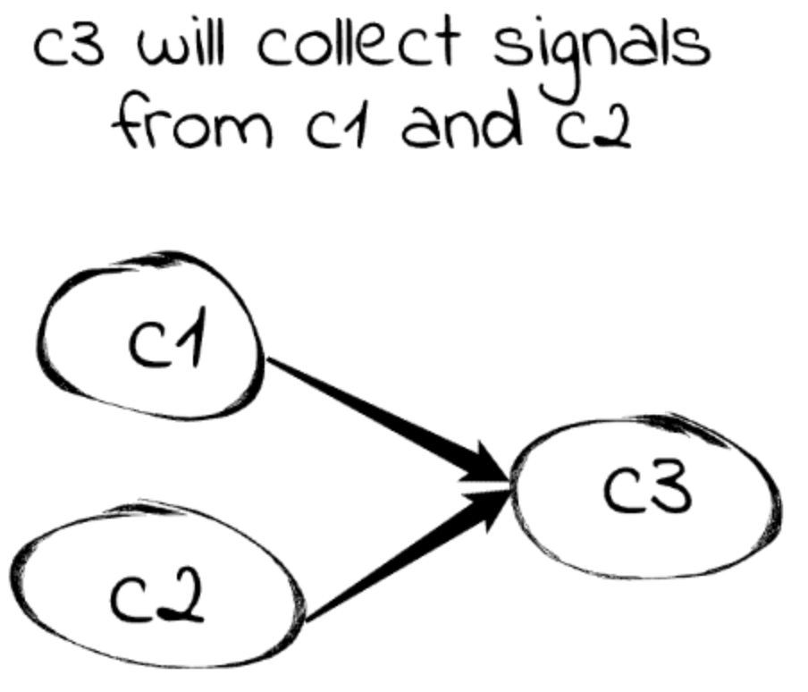

January 7, 2026
FMesh – Lego for Programmers
About a year ago, I quit my job and started looking for a new one. Between interviews, I suddenly had something rare: time. Naturally, I started thinking about a pet project.
I had always liked building things. As a kid, I played with gears, motors, and random mechanical parts. My father worked as a car mechanic and regularly brought home discarded components, which felt like treasure. I even dreamed of building my own car. I also played with construction toys like Lego, as most kids did.
That interest never really disappeared. I once tried to build a perpetual motion machine. It did not work. Thermodynamics eventually won. Still, the desire to assemble systems from smaller parts stuck with me, and it probably influenced my decision to become a software engineer. I could imagine myself in other engineering fields too: mechanics, aviation, anything where systems came together and did something real.
Programming always felt like building. I could snap components together, connect them, and watch a system work. The problem wasn’t the act itself—it was what I was building. After more than ten years of web apps, microservices, and fintech systems, everything had the same shape: APIs, queues, workers, and glue code. The novelty had worn off.
I wanted something different. Not another framework forcing me into controllers, routers, models, and views. I wanted something lower-level and flexible—something that let me model real-world systems: an elevator, an engine, a car built from that engine, or even electronic circuits where components exchanged signals and logic flowed naturally. Could I build, test, and debug that like software?
That was the moment the idea clicked.
I wanted Lego for programmers.
Better than Lego, actually. Lego with unlimited blocks. Blocks I could design myself, with any behavior or complexity I wanted. Naturally, I decided to build it in Go, my favorite compiled language at the time.
Finding the Right Abstraction
I started by looking at existing frameworks and libraries in the same space: actor systems, Flow-Based Programming frameworks, and various concurrency helpers. On paper, many of them looked promising. In practice, they all shared the same fundamental problem: they didn't abstract Go's concurrency model—they exposed it.
Flow-Based Programming frameworks were especially interesting. I read J. Paul Morrison's original FBP book and explored several Go implementations. Conceptually, FBP was close to what I wanted. But most Go-based implementations treated concurrency as a first-class concern for the user. I would have been expected to reason about channels, goroutines, and scheduling directly. That defeated the purpose.
Most of these frameworks were thin layers over goroutines and channels. Components were often long-running goroutines. Communication happened via channels that the user had to wire, buffer, close, and synchronize correctly. Technically, this was flexible. Practically, it pushed all the hard parts back onto the user.
Go already gave me goroutines and channels. I didn't need a framework to remind me they existed.
It became clear that building anything non-trivial on top of such frameworks would be a nightmare. I would constantly have to think about:
- Who owned a channel
- Who closed it, and when
- What happened if a sender blocked
- How many goroutines were running at any moment
- Whether a select statement could starve another path
This is what “simple” looks like in a typical Go FBP library:
That's fine for system software or infrastructure, but it completely killed the fun when I wanted to model something like an elevator, a production line, or an electronic circuit.
I wanted concurrency to be structural, not procedural. Something I could get by how I connected components, not by how carefully I juggled channels.
So I stripped the model down to the bare minimum. The system has only two fundamental concepts:
- Components: units of behavior
- Signals: data flowing between components
Components have named input and output ports that act as communication points and allow connecting components into a graph. A component activates when it has at least one input signal and is completely unaware of the rest of the graph.
The core of the component is its activation function. Inside that function, user code runs synchronously. No goroutines. No channels. No select statements. Just normal code.
A typical activation function does three things:
- Read input signals
- Execute logic
- Emit output signals
Example:
Those outputs become inputs for other components, triggering further activations. The process continues until no component has pending inputs. At that point, the graph reaches a stable state and results can be collected.
Structural Concurrency
This execution model gives concurrency almost as a side effect of structure.
Every component that has input signals is eligible for activation. All eligible components are scheduled concurrently, each in its own goroutine. Because input ports belong to a single component, there is no shared state by default. As long as components don’t share a mutable state, data races are avoided by design.
Inside a component, you write ordinary, synchronous Go code. There are no goroutines, no channels, no select statements, and no explicit synchronization. Scheduling, execution, and isolation are handled entirely by the framework.
Synchronization emerges from how you connect components:
- Pipelines naturally enforce sequential execution 
- Fan-out represents parallel work 
- Fan-in collects results from concurrent stages 
This makes concurrency structural. You don't describe how things run in parallel. You describe what is connected to what, and parallelism follows automatically.
The result is a model where you can focus on the system you're building instead of the mechanics of making it safe to run. You think in terms of data flow and composition, not lifecycles and synchronization rules. That shift is the whole point.
What It Became
Out of this model came Functional Mesh, or FMesh.
While many parts of the design evolved over time, the concurrency model never changed. It turned out to be the most stable and valuable part of the system.
FMesh is not a classical FBP framework. It can be better described as an FBP-inspired system. Components are not long-running processes. They activate, do their work, emit signals, and finish. This makes the system closer in spirit to computational graphs than to traditional process networks.
As the project evolved, my focus shifted toward state machines, simulations, and game-engine-like models. These are systems built from many small, interacting parts that react to events rather than run forever.
FMesh was never intended to be a high-performance Go framework or a solution for synchronization-heavy workloads. That was a conscious choice. Its purpose is to make complex behavior easy to express. FMesh favors clarity over raw throughput and structure over clever concurrency. It is a tool for modeling state, interactions, and logic in a way that stays simple, composable, and enjoyable to work with.
Developer Experience
Over time, I added some conveniences:
Visualization: You can export a mesh as a DOT graph or image and explore the structure visually. Very useful for understanding what you actually built.
Looks a bit ugly, but I love the ability to look at my program and follow the data flow.

Chained API: Not idiomatic Go, yes, but it allows fluent code without checking errors on every line. Errors bubble up, which is good enough.
Component-level state: Components started as pure functions, but I quickly needed state between activations. External variables were ugly and error-prone, so I added a simple key-value store per component (optional, of course).
Hooks: Small functions that execute before and after important events, useful for debugging and instrumentation.
Development Process
I’m currently the only contributor and user, which is fine for a project at this stage.
I maintain two repositories:
When I finish a feature or bugfix in the framework, I deliberately switch roles and become an FMesh user for a while. I build example programs to stress the system and see where it breaks, where it feels awkward, and where the abstractions leak.
I started with small examples like a pipeline and a load balancer, then moved on to a larger project: a realistic CAN bus simulation. Right now, I'm working on an even bigger example, a human body simulation, which deserves its own post.
Building examples is how I validate the design. It's the fastest way to find bugs, expose pain points, and discover patterns that should probably become first-class features. If something feels annoying or unnatural while using FMesh, that's a signal that the framework — not the example — needs to change.
Looking Ahead
I'm honestly surprised I'm still working on this project after more than a year. It still feels like playing with Lego, and that's reason enough to keep going.
I hope FMesh will grow beyond a personal playground and more people will find it useful.
Keep building.